건축산업기사 (2020-06-06 기출문제)
1과목: 건축계획
1. 다음 중 고층사무소 건축에서 층고를 낮게 잡는 이유와 가장 거리가 먼 것은?
- 층고가 높을수록 공사비가 높아지므로
- 실내 공기조화의 효율을 높이기 위하여
- 제한된 건물 높이 한도내에서 가능한 한 많은 층수를 얻기 위하여
- 에스컬레이터의 왕복시간을 단축시킴으로서 서비스의 효율을 높이기 위하여
(정답률: 68%)

2. 숑바르 드 로브의 주거면적기준 중 병리기준으로 옳은 것은?
- 6m2/인
- 8m2/인
- 14m2/인
- 16m2/인
(정답률: 77%)
3. 오피스 랜드스케이프(office landscape)에 관한 설명으로 옳지 않은 것은?
- 개방식 배치의 한 형식이다.
- 커뮤니케이션의 융통성이 있다.
- 독립성과 쾌적감의 이점이 있다.
- 소음 발생에 대한 고려가 요구된다.
(정답률: 78%)
4. 건축 척도 조정(Modular Coordination)에 관한 설명으로 옳지 않은 것은?
- 설계작업이 단순해지고 간편해진다.
- 현장작업이 단순해지고 공기가 단축된다.
- 국제적인 MC사용 시 건축구성재의 국제 교역이 용이해진다.
- 건물의 종류에 따른 계획 모듈의 사용으로 자유롭고 창의적인 설계가 용이하다.
(정답률: 73%)
5. 상점에서 쇼 윈도우(Show Window)의 반사 방지 방법으로 옳지 않은 것은?
- 쇼 윈도우 형태를 만입형으로 계획한다.
- 쇼 윈도우 내부의 조도를 외부보다 낮게 처리한다.
- 캐노피를 설치하여 쇼 윈도우 외부에 그늘을 조성한다.
- 쇼 윈도우를 경사지게 하거나 특수한 경우 곡면유리로 처리한다.
(정답률: 77%)
6. 다음 중 공동주택 단지 내의 건물배치계획에서 남북간 인동간격의 결정과 가장 관계가 적은 것은?
- 일조시간
- 건물의 방위각
- 대지의 경사도
- 건물의 동서길이
(정답률: 73%)
7. 타운 하우스에 관한 설명으로 옳지 않은 것은?
- 각 세대마다 주차가 용이하다.
- 단독주택의 장점을 최대한 고려한 유형이다.
- 프라이버시 확보를 위하여 경계벽 설치가 가능하다.
- 일반적으로 1층은 침실과 서재와 같은 휴식공간, 2층은 거실, 식당과 같은 생활공간으로 구성된다.
(정답률: 74%)
8. 사무소 건축의 코어 유형에 관한 설명으로 옳지 않은 것은?
- 중심코어는 유효율이 높은 계획이 가능한 유형이다.
- 양단코어는 피난동선이 혼란스러워 방재상 불리한 유형이다.
- 편심코어는 각 층 바닥면적이 소규모인 경우에 적합한 유형이다.
- 독립코어는 코어를 업무공간으로부터 분리시킨 관계로 업무공간의 융통성이 높은 유형이다.
(정답률: 75%)
9. 상점 건축의 판매형식에 관한 설명으로 옳지 않은 것은?
- 측면판매는 충동적인 구매와 선택이 용이하다.
- 대면판매는 상품을 고객에게 설명하기가 용이하다.
- 측면판매는 판매원이 정위치를 정하기가 용이하며 즉석에서 포장이 편리하다.
- 대면판매는 쇼 케이스(Show case)가 많아지면 상점의 분위기가 딱딱해질 우려가 있다.
(정답률: 73%)
10. 주거공간을 주 행동에 따라 개인공간, 사회공간, 노동공간 등으로 구분할 경우, 다음 중 사회공간에 속하는 것은?
- 서재
- 부엌
- 식당
- 다용도실
(정답률: 67%)
11. 주택 식당의 배치 유형 중 다이닝 키친(DK형)에 관한 설명으로 옳은 것은?
- 대규모 주택에 적합한 유형으로 쾌적한 식당의 구성이 용이하다.
- 싱크대와 식탁의 거리가 멀어지는 관계로 주부의 동산이 길다는 단점이 있다.
- 부엌의 일부에 간단한 식탁을 설치하거나 식당과 부엌을 하나로 구성한 형태이다.
- 거실과 식당이 하나로 된 형태로 거실의 분위기에서 식사 분위기의 연출이 용이하다.
(정답률: 73%)
12. 공동주택의 형식에 관한 설명으로 옳지 않은 것은?
- 홀형은 거주의 프라이버시가 높다.
- 편복도형은 각 세대의 방위를 동일하게 할 수 있다.
- 중복도형은 부지의 이용률은 가장 낮으나 건물의 이용도가 높다.
- 집중형은 복도 부분의 환기 등의 문제점을 해결하기 위해 기계적 환경조절이 필요한 형식이다.
(정답률: 68%)
13. 일주일 평균 수업시간이 30시간인 학교에서 음악교실에서의 수업시간이 20시간이며, 이 중 15시간은 음악시간으로, 나머지 5시간은 무용시간으로 사용되었다면, 이 음악교실의 이용률과 순수율은?
- 이용률 50%, 순수율 33%
- 이용률 67%, 순수율 75%
- 이용률 50%, 순수율 75%
- 이용률 67%, 순수율 33%
(정답률: 72%)
14. 공동주택의 공동시설 계획에 관한 설명으로 옳지 않은 것은?
- 간선도로 변에 위치시킨다.
- 중심을 형성할 수 있는 곳에 설치한다.
- 확장 또는 증설을 위한 용지를 확보한다.
- 이용빈도가 높은 건물은 이용거리를 짧게 한다.
(정답률: 70%)
15. 다음 중 단독주택 계획 시 가장 중요하게 다루어져야 할 것은?
- 침실의 넓이
- 주부의 동선
- 현관의 위치
- 부엌의 방위
(정답률: 74%)
16. 학교 운영방식 중 교과교실형(V형)에 관한 설명으로 옳은 것은?
- 교실수는 학급수에 일치한다.
- 모든 교실이 특정한 교과를 위해 만들어진다.
- 능력에 따라 학급 또는 학년을 편성하는 방식이다.
- 일반교실이 각 학급에 하나씩 배당되고 그 외에 특별교실을 갖는다.
(정답률: 65%)
17. 사무소 건축의 엘리베이터 계획에 관한 설명으로 옳은 것은?
- 대면배치의 경우 대면거리는 최소 6.5m 이상으로 한다.
- 엘리베이터의 대수는 아침 출근시간의 키프 30분간을 기준으로 선정한다.
- 1개소에 연속하여 6대를 설치할 경우 직선형(일렬형)으로 배치하는 것이 좋다.
- 여러 대의 엘리베이터를 설치하는 경우, 그룹별 배치와 군 관리 운전방식으로 한다.
(정답률: 69%)
18. 초등학교 건축계획에 관한 설명으로 옳은 것은?
- 저학년에서는 달톤형의 학교운영방식이 가장 적합하다.
- 저학년의 배치형은 1열로 서 있는 것보다 중정을 중심으로 둘러싸인 형이 좋다.
- 동일한 층에 저학년부터 고학년까지의 각 학년의 학급이 혼합되도록 배치하는 것이 좋다.
- 저학년 교실은 독립성 확보를 위해 1층에 위치하지 않도록 하며, 교문과 근접하지 않도록 한다.
(정답률: 67%)
19. 공장건축의 배치형식 중 분관식에 관한 설명으로 옳지 않은 것은?
- 작업장으로의 통풍 및 채광이 양호하다.
- 추후 확장계획에 따른 증축이 용이한 유형이다.
- 각 공장건축물의 건설을 동시에 병행할 수 있어 건설 기간의 단축이 가능하다.
- 대지의 형태가 부정형이거나 지형상의 고저 차가 있을 때는 적용이 불가능하다.
(정답률: 69%)
20. 상점의 정면(facade) 구성에 요구되는 AIDMA 법칙의 내용에 속하지 않는 것은?
- 예술(Art)
- 욕구(Desire)
- 흥미(Interest)
- 기억(Memory)
(정답률: 74%)
2과목: 건축시공
21. 벽돌쌓기법 중 매켜에 길이쌓기와 마구리쌓기가 번갈아 나오는 방식으로 퉁줄눈이 많으나 아름다운 외관이 장점인 벽돌쌓기 방식은?
- 미식 쌓기
- 영식 쌓기
- 불식 쌓기
- 화란식 쌓기
(정답률: 55%)
22. 구조물 위치 전체를 동시에 파내지 않고 측벽이나 주열선 부분만을 먼저 파내고 그 부분의 기초와 지하구조체를 축조한 다음 중앙부의 나머지 부분을 파내어 지하구조물을 완성하는 굴착공법은?
- 오픈 컷 공법(open cut method)
- 트렌치 컷 공법(trench cut method)
- 우물통식 공법(well method)
- 아일랜드 컷 공법(island cut method)
(정답률: 61%)
23. 진공 콘크리트(Vacuum Concrete)의 특징으로 옳지 않은 것은?
- 건조수축의 저감, 동결방지 등의 목적으로 사용된다.
- 일반콘크리트에 비해 내구성이 개선된다.
- 장기강도는 크나 초기강도는 매우 작은 편이다.
- 콘크리트가 경화하기 전에 진공매트(Mat)로 콘크리트 중의 수분과 공기를 흡수하는 공법이다.
(정답률: 62%)
24. 도장공사에서 표면의 요철이나 홈, 빈틈을 없애기 위하여 주로 점도가 높은 퍼티나 충전제를 메우고 여분의 도료는 긁어 평활하게 하는 도장방법은?
- 붓도장
- 주걱도장
- 정전분체도장
- 롤러도장
(정답률: 63%)
25. 총공사비 중 공사원가를 구성하는 항목에 포함되지 않는 것은?
- 재료비
- 노무비
- 경비
- 일반관리비
(정답률: 66%)
26. 다음 중 철근의 이음 방법이 아닌 것은?
- 빗이음
- 겹침이음
- 기계적이음
- 용접이음
(정답률: 62%)
27. 크롬산 이연을 안료로 하고, 알키드 수지를 전색료로 한 것으로서 알루미늄 녹막이 초벌칠에 적당한 도료는?
- 광명단
- 징크로메이트(Zincromate)
- 그라파이트(Graphite)
- 파커라이징(Paekerizing)
(정답률: 57%)
28. 이형철근의 할증률로 옳은 것은?
- 10%
- 8%
- 5%
- 3%
(정답률: 56%)
29. 기성말뚝공사 시공 전 시험말뚝박기에 관한 설명으로 옳지 않은 것은?
- 시험말뚝박기를 실시하는 목적 중 하나는 설계내용과 실제 지반조건의 부합여부를 확인하는 것이다.
- 설계상의 말뚝길이보다 1~2m 짧은 것을 사용한다.
- 항타작업 전반의 적합성 여부를 확인하기 위해 동재하시험을 실시한다.
- 시험말뚝의 시공결과 말뚝길이, 시공방법 또는 기초형식을 변경할 필요가 생긴 경우는 변경검토서를 공사감독자에게 제출하여 승인받은 후 시공에 임하여야 한다.
(정답률: 67%)
30. 표준시방서에 따른 바닥공사에서의 이중바닥 지지방식이 아닌 것은?
- 달대고정방식
- 장선방식
- 공통독립 다리방식
- 지지부 부착 패널방식
(정답률: 44%)
31. 콘크리트가 시일이 경과함에 따라 공기 중의 탄산가스작용을 받아 수산화칼슘이 서서히 탄산칼륨이 되면서 알칼리성을 잃어가는 현상을 무엇이라고 하는가?
- 탄산화
- 알칼리 골재반응
- 백화현상
- 크리프(creep) 현상
(정답률: 57%)
32. 건설공사의 도급계약에 명시하여야 할 사항과 거리가 먼 것은?
- 공사내용
- 공사착수의 시기와 공사완성의 시기
- 하자담보책임기간 및 담보방법
- 대지형황에 따른 설계도면 작성방법
(정답률: 64%)
33. 슬라이딩 폼(sliding form)의 특징에 관한 설명으로 옳지 않은 것은?
- 공기를 단축할 수 있다.
- 내ㆍ외부 비계발판이 일체형이다.
- 콘크리트의 일체성을 확보하기 어렵다.
- 사일로(silo)공사에 많이 이용된다.
(정답률: 64%)
34. 다음 각 유리의 특징에 관한 설명으로 옳지 않은 것은?
- 망입유리는 판유리 가운데에 금속망을 넣어 압착 성형한 유리로 방화 및 방재용으로 사용된다.
- 강화유리는 일반유리의 3~5배 정도의 강도를 가지며, 출입구, 에스컬레이터 난간, 수족관 등 안전이 중시되는 곳에 사용된다.
- 접합유리는 2장 또는 그 이상의 판유리에 특수필름을 삽입하여 접착시킨 안전유리로서 파손되어도 파편이 발생하지 않는다.
- 복층유리는 2~3장의 판유리를 간격 없이 밀착하여 만든 유리로서 단열ㆍ방서ㆍ방음용으로 사용된다.
(정답률: 49%)
35. 조적벽체에 발생하는 균열을 대비하기 위한 신축줄눈의 설치 위치로 옳지 않은 것은?
- 벽높이가 변하는 곳
- 벽두께가 변하는 곳
- 집중응력이 작용하는 곳
- 창 및 출입구 등 개구부의 양측
(정답률: 53%)
36. 각종 콘크리트에 관한 설명으로 옳지 않은 것은?
- 프리플레이스트 콘크리트(preplaced concrete)란 미리 거푸집 속에 특정한 입도를 가지는 굵은 골재를 채워놓고, 그 간극에 모르타르를 주입하여 제조한 콘크리트이다.
- 숏크리트(shotcrete)는 콘크리트 자체의 밀도를 높이고 내구성, 방수성을 높게 하여 물의 침투를 방지하도록 만든 콘크리트로서 수중구조물에 사용된다.
- 고성능 콘크리트는 고강도, 고유동 및 고내구성을 통칭하는 콘크리트의 명칭이다.
- 소일 콘크리트(soil concrete)는 흙에 시멘트와 물을 혼합하여 만든다.
(정답률: 59%)
37. AE제 및 AE공기량에 관한 설명으로 옳지 않은 것은?
- AE제를 사용하면 동결융해저항성이 커진다.
- AE제를 사용하면 골재분리가 억제되고, 블리딩이 감소한다.
- 공기량이 많아질수록 슬럼프가 증대된다.
- 콘크리트의 온도가 낮으면 공기량은 적어지고 콘크리트의 온도가 높으면 공기량은 증가한다.
(정답률: 47%)
38. 건설공사 현장관리에 관한 설명으로 옳지 않은 것은?
- 목재는 건조시키기 위하여 개별로 세워둔다.
- 현장사무소는 본 건물 규모에 따라 적절한 규모로 설치한다.
- 철근은 그 직경 및 길이별로 분류해둔다.
- 기와는 눕혀서 쌓아둔다.
(정답률: 66%)
39. 금속제 천장틀의 사용자재가 아닌 것은?
- 코너비드
- 달대볼트
- 클립
- ㄷ자형 반자틀
(정답률: 61%)
40. 콘트리트의 계획배합의 표시 항목과 가장 거리가 먼 것은?
- 배합강도
- 공기량
- 염화물량
- 단위수량
(정답률: 48%)
3과목: 건축구조
41. 장주인 기둥에 중심축하중이 작용할 때 오일러의 좌굴하중 산정에 관한 설명으로 옳지 않은 것은?
- 기둥의 단면적이 큰 부재가 작은 부재보다 좌굴하중이 크다.
- 기둥의 단면 2차모멘트가 큰 부재가 작은 부재보다 좌굴하중이 크다.
- 기둥의 탄성계수가 큰 부재가 작은 부재보다 좌굴하중이 크다.
- 기둥의 세장비가 큰 부재가 작은 부재보다 좌굴하중이 크다.
(정답률: 45%)
42. 그림과 같은 구조물에서 A지점의 반력 모멘트는?
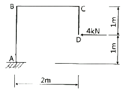
- -8kNㆍm
- 8kNㆍm
- -4kNㆍm
- 4kNㆍm
(정답률: 33%)
43. 강구조 접합부에 관한 설명으로 옳지 않은 것은?
- 기둥-보 접합부는 접합부의 성능과 회전에 대한 구속 정도에 따라 전단접함, 부분강접합, 완전강접합으로 구분된다.
- 주요한 건물의 접합부에는 미끄럼 발생을 방지하기 위해 일반볼트를 사용한다.
- 접합부는 45kN 이상 지지하도록 설계한다. 단, 연결재, 새그로드, 띠장은 제외한다.
- 고장력볼트의 접합방법에는 마찰접합, 지압접합, 인장접합이 있다.
(정답률: 63%)
44. 철선의 길이 ℓ=1.5m에 인장하중을 가하여 길이가 1.5009m로 늘어났을 때 변형율(ε)은?
- 0.0003
- 0.00⑤
- 0.0006
- 0.0008
(정답률: 52%)
45. 그림과 같은 단면에 전단력 18kN에 작용할 경우 최대전단응력도는?
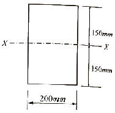
- 0.45MPa
- 0.52MPa
- 0.58MPa
- 0.64MPa
(정답률: 35%)
46. 강도설계법에 의한 철근콘크리트의 보 설계 시 최대철근비 개념을 두는 가장 큰 이유는?
- 경제적인 설계가 되도록 하기 위해
- 취성파괴를 유도하기 위해
- 구조적인 효율을 높이기 위해
- 연성파괴를 유도하기 위해
(정답률: 45%)
47. 강구조 조립압축재에 관한 설명으로 옳지 않은 것은?
- 낄판, 띠판, 래티스형식(단일래티스, 복래티스) 등이 있다.
- 래티스형식에서 세장비는 단일래티스는 120이하, 복래티스는 280이하이다.
- 부재의 축에 대한 래티스부재의 경사각은 단일래티스의 경우 60° 이상으로 한다.
- 평강, ㄱ형강, ㄷ형강이 래티스로 사용된다.
(정답률: 44%)
48. 그림과 같은 정사각형 기초에서 바닥에 인장 응력이 발생하지 않는 최대편심거리 e의 값은?
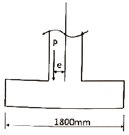
- 100mm
- 200mm
- 300mm
- 400mm
(정답률: 47%)
49. 압축 이형철근의 정착길이에 관한 설명으로 옳지 않은 것은?
- 압축 이형철근의 정착길이는 항상 200mm 이상이어야 한다.
- 압축 이형철근의 정착에는 표준갈고리가 요구된다.
- 압축 이형철근의 기본정착길이는 철근직경이 커지면 증가한다.
- 압축 이형철근의 기본정착길이는 0.043dbfy 이상이어야 한다.
(정답률: 40%)
50. 강도설계법에 의하여 다음 그림과 같은 철근콘크리트 보를 설게할 때 등가응력블록깊이 a는? (단, fck=24MPa, fy=400MPa, D22 철근 1개의 단면적은 387mm2임)
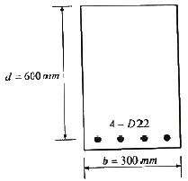
- 101.2mm
- 111.2mm
- 121.2mm
- 131.2mm
(정답률: 39%)
51. 그림과 같은 직사각형 판의 AB면을 고정시키고 점 C를 수평으로 0.3mm 이동시켰을 때 측면 AC의 전단변형도는?
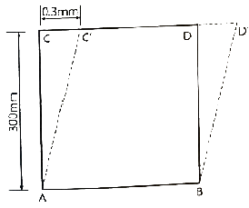
- 0.001rad
- 0.002rad
- 0.003rad
- 0.004rad
(정답률: 45%)
52. 연약지반에서 발생하는 부동침하의 원인으로 옳지 않은 것은?
- 부분적으로 증축했을 때
- 이질지반에 건물이 걸쳐 있을 때
- 지하수가 부분적으로 변화할 때
- 지내력을 같게 하기 위해 기초판 크기를 다르게 했을 때
(정답률: 60%)
53. 양단연속 보 부재에서 처짐을 계산하지 않는 경우 보의 최소두께는? (단, L은 부재의 길이, 보통중량콘크리트와 설계기준항복강도 400MPa 철근 사용)
- L/8
- L/16
- L/18.5
- L/21
(정답률: 40%)
54. 그림과 같은 3힌지 라멘의 수평반력을 구하면?
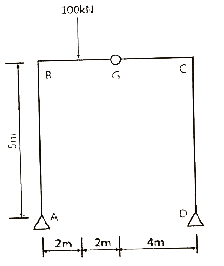
- HA=20kN(→), HD=20kN(←)
- HA=20kN(←), HD=20kN(→)
- HA=20kN(→), HD=20kN(→)
- HA=20kN(←), HD=20kN(←)
(정답률: 41%)
55. 강도설계법에 의한 철근콘크리트 구조물 설계에서 고정하중 ωD=4kN/m2이고, 활하중 ωL=5kN/m2인 경우 소요강도 산정을 위한 계수하중 ωu는 얼마인가?
- 9kN/m2
- 10.6kN/m2
- 12.8kN/m2
- 15.3kN/m2
(정답률: 48%)
56. 그림과 같은 양단고정인 보에서 A점의 휨모멘트는? (단, EI는 일정)
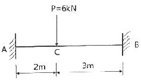
- -4.32kNㆍm
- 4.32kNㆍm
- -6.23kNㆍm
- 6.23kNㆍm
(정답률: 28%)
57. 그림과 같은 파단면(A-1-3-4-B)에서 인장재의 순단면적은? (단, 구멍의 직경은 22mm이며 판의 두께는 6mm)
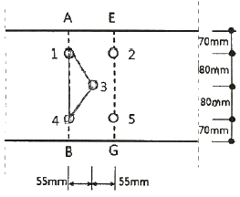
- 1134mm2
- 1327mm2
- 1517mm2
- 1542mm2
(정답률: 34%)
58. 그림과 같은 트러스의 U, V, L부재의 부재력은 각각 몇 kN인가? (단, -는 압축력, +는 인장력)
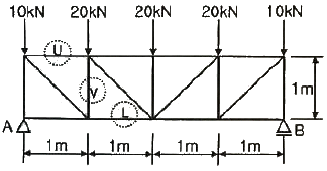
- U=-30kN, V=-30kN, L=30kN
- U=-30kN, V=30kN, L=-30kN
- U=30kN, V=-30kN, L=30kN
- U=30kN, V=30kN, L=-30kN
(정답률: 37%)
59. 강구조의 구성부재 중 보에 관한 설명으로 옳지 않은 것은?
- 보는 휨과 전단에 의한 응력과 변형이 주로 발생한다.
- 보는 횡좌굴 방지를 고려할 필요가 없다.
- 보는 부재의 단면형상으로는 H형 단면이 주로 사용하며, 박스형, I형, ㄷ형단면이 사용되기도 한다.
- 처짐에 대한 사용성이 확보되어야 한다.
(정답률: 62%)
60. 강도설계법에서 균형철근비 ρb=0.03이고, b=300mm, d=500mm일 때 최대 철근량은? (단, Es=200000MPa, fy=400MPa, fck=24MPa이다.)(관련 규정 개정전 문제로 여기서는 기존 정답인 3번을 누르면 정답 처리됩니다. 자세한 내용은 해설을 참고하세요.)
- 1825mm2
- 2825mm2
- 3214mm2
- 4525mm2
(정답률: 49%)
4과목: 건축설비
61. 열매가 온수인 경우, 표준싱태(열매온도 80℃, 실온 18.5℃)에서 방열기 표면적 1m2당 방열량은?
- 450W
- 523W
- 650W
- 756W
(정답률: 41%)
62. 다음 중 통기관을 설치하여도 트랩의 봉수파괴를 막을 수 없는 것은?
- 분출작용에 의한 봉수파괴
- 자기 사이펀에 의한 봉수파괴
- 유도 사이펀에 의한 봉수파괴
- 모세관 현상에 의한 봉수파괴
(정답률: 52%)
63. 다음 중 환기횟수에 관한 설명으로 가장 알맞은 것은?
- 한 시간 동안에 창문을 여닫는 횟수를 의미한다.
- 하루 동안에 공조기를 작동하는 횟수를 의미한다.
- 한 시간 동안의 환기량을 실의 용적으로 나눈 값이다.
- 하루 동안의 환기량을 실의 면적으로 나눈 값이다.
(정답률: 53%)
64. 보일러의 상용출력을 가장 올바르게 표현한 것은?
- 급탕부하+난방부하+배관부하
- 급탕부하+배관부하+예열부하
- 난방부하+배관부하+예열부하
- 급탕부하+난방부하+배관부하+예열부하
(정답률: 57%)
65. 공기조화방식 중 이중덕트방식에 관한 설명으로 옳지 않은 것은?
- 전공기방식의 특성이 있다.
- 혼합상자에서 소음과 진동이 발생할 수 있다.
- 냉ㆍ온풍을 혼합 사용하므로 에너지 절감 효과가 크다.
- 부하특성이 다른 다수의 실이나 존에도 적용할 수 있다.
(정답률: 58%)
66. 펌프의 전양정이 100m, 양수량이 12m3/h일 때, 펌프의 축동력은? (단, 펌프의 효율은 60%이다.)
- 약 3.52kW
- 약 4.⑤kW
- 약 4.52kW
- 약 5.45kW
(정답률: 31%)
67. 공기조화방식 중 전공기 방식의 일반적 특징으로 옳지 않은 것은?
- 중간기에 외기냉방이 가능하다.
- 실내에 배관으로 인한 누수의 염려가 없다.
- 덕트 스페이스가 필요 없으며 공조실의 면적이 작다.
- 팬코일 유닛과 같은 기구의 노출이 없어 실내 유효면적을 넓힐 수 있다.
(정답률: 46%)
68. 정화조에서 호기성균에 의해 오물을 분해 처리 하는 곳은?
- 부패조
- 여과기
- 산화조
- 소독조
(정답률: 60%)
69. 수동으로 회로를 개폐하고, 미리 설정된 전류의 과부하에서 자동적으로 회로를 개방하는 장치로 정격의 범위 내에서 적절히 사용하는 경우 자체에 어떠한 손상을 일으키지 않도록 설계된 장치는?
- 캐비닛
- 차단기
- 단로스위치
- 절환스위치
(정답률: 57%)
70. 다음 설명에 알맞은 간선의 배선 방식은?
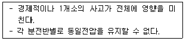
- 평행식
- 루프식
- 나무가지식
- 나뭇가지 평행식
(정답률: 59%)
71. 다음의 통기방식 중 트랩마다 통기되기 때문에 가장 안정도가 높은 방식은?
- 각개통기방식
- 루프통기방식
- 신정통기방식
- 결합통기방식
(정답률: 66%)
72. 다음 중 조명설계의 순서에서 가장 먼저 이루어져야 하는 사항은?
- 광원의 선정
- 조명 방식의 선정
- 소요 조도의 결정
- 조명 기구의 결정
(정답률: 55%)
73. 난방방식에 관한 설명으로 옳은 것은?
- 증기난방은 온수난방에 비해 예열시간이 길다.
- 온수난방은 증기난방에 비해 방열온도가 높으며 장치의 열용량이 작다.
- 복사난방은 실은 개방상태로 하였을 때 난방효과가 없다는 단점이 있다.
- 온풍난방은 가열 공기를 보내어 난방 부하를 조달함과 동시에 습도의 제어도 가능하다.
(정답률: 41%)
74. 물의 경도는 물 속에 녹아있는 염류의 양을 무엇의 농도로 환산하여 나타낸 것인가?
- 탄산칼륨
- 탄산칼슘
- 탄산나트륨
- 탄산마그네슘
(정답률: 50%)
75. 스프링클러설비의 배관에 관한 설명으로 옳지 않은 것은?
- 가지배관은 각 층을 수직으로 관통하는 수직 배관이다.
- 교차배관이란 직접 또는 수직배관을 통하여 가지배관에 급수하는 배관이다.
- 급수배관은 수원 및 옥외송수구로부터 스프링 클러헤드에 급수하는 배관이다.
- 신축배관은 가지배관과 스프링클러헤드를 연결하는 구부림이 용이하고 유연성을 가진 배관이다.
(정답률: 36%)
76. LPG의 일반적 특성으로 옳지 않은 것은?
- 발열량이 크다.
- 순수한 LPG는 무색 무취이다.
- 연소 시 다량의 공기가 필요하다.
- 공기보다 가볍기 때문에 안전성이 높다.
(정답률: 64%)
77. 압축식 냉동기의 냉동사이클을 올바르게 표현한 것은?
- 압축→응축→팽창→증발
- 압축→팽창→응축→증발
- 응축→증발→팽창→압축
- 팽창→증발→응축→압축
(정답률: 58%)
78. 옥내의 은폐장소로서 건조한 콘크리트 바닥면에 매입 사용되는 것으로, 사무용 건물 등에 채용되는 배선방법은?
- 버스덕트 배선
- 금속몰드 배선
- 금속덕트 배선
- 플로어덕트 배선
(정답률: 62%)
79. 습공기를 가열하였을 경우, 상태값이 감소하는 것은?
- 비체적
- 상대습도
- 습구온도
- 절대습도
(정답률: 49%)
80. 양수량이 1.0m3/mim인 펌프에서 회전수를 원래보다 10% 증가시켰을 경우의 양수량은?
- 1.0m3/min
- 1.1m3/min
- 1.2m3/min
- 1.3m3/min
(정답률: 60%)
5과목: 건축관계법규
81. 바닥면적 산정 기준에 관한 내용으로 틀린 것은?
- 층고가 2.0m인 다락은 바닥면적에 산입하지 아니한다.
- 승강기탑, 계단탑은 바닥면적에 산입하지 아니한다.
- 공동주택으로서 지상층에 설치한 기계실의 면적은 바닥면적에 산입하지 아니한다.
- 벽ㆍ기둥의 구획이 없는 건축물은 그 지붕 끝부분으로부터 수평거리 1m를 후퇴한 선으로 둘러싸인 수평투영면적으로 한다.
(정답률: 44%)
82. 피뢰설비를 설치하여야 하는 건축물의 높이기준은?
- 15m 이상
- 20m 이상
- 31m 이상
- 41m 이상
(정답률: 62%)
83. 노외주차장에 설치할 수 있는 부대시설의 종류에 속하지 않는 것은? (단, 특별자치도ㆍ시ㆍ군 또는 자치구의 조례로 정하는 이용자 편의시설은 제외)
- 휴게소
- 관리사무소
- 고압가스 충전소
- .전기자동차 충전시설
(정답률: 56%)
84. 도심ㆍ부도심의 상업기능 및 업무기능의 확충을 위하여 지정하는 상업지역의 세분은?
- 중심상업지역
- 일반상업지역
- 근린상업지역
- 유통상업지역
(정답률: 51%)
85. 건축물의 높이가 100m일 때 건축물의 건축과정에서 허용되는 건축물 높이 오차의 범위는?
- ±1.0m 이내
- ±1.5m 이내
- ±2.0m 이내
- ±3.0m 이내
(정답률: 49%)
86. 건축법에 따른 제1종 근린생활시설로서 당해 용도에 쓰이는 바닥면적의 합게가 최대 얼마 미만인 경우 제2종 전용주거지역안에서 건축할 수 있는가?
- 500m2
- 1000m2
- 1500m2
- 2000m2
(정답률: 49%)
87. 건축물을 건축하고자 하는 자가 사용승인을 받는 즉시 건축물의 내진능력을 공개하여야 하는 대상 건축물의 연면적 기준은? (단, 목구조 건축물이 아닌 경우)
- 100m2 이상
- 200m2 이상
- 300m2 이상
- 400m2 이상
(정답률: 47%)
88. 주거에 쓰이는 바닥면적의 합계가 550m2인 주거용 건축물의 음용수용 급수관 지름은 최소 얼마 이상이어야 하는가?
- 20mm
- 30mm
- 40mm
- 50mm
(정답률: 47%)
89. 다음은 부설주차장의 인근 설치에 관한 기준 내용이다. 밑중 친 “대통령령으로 정하는 규모”기준으로 옳은 것은?
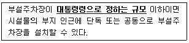
- 주차대수 100대의 규모
- 주차대수 200대의 규모
- 주차대수 300대의 규모
- 주차대수 400대의 규모
(정답률: 50%)
90. 대통령령으로 정하는 용도와 규모의 건축물에 일반이 사용할 수 있도록 대통령령으로 정하는 기준에 따라 소규모 휴식시설 등의 공개 공지 또는 공개 공간을 설치하여야 하는 대상 지역에 속하지 않는 것은? (단, 특별자치시장ㆍ특별자치도지사 또는 시장ㆍ군수ㆍ구청장이 도시화의 가능성이 크거나 노후 산업단지의 정비가 필요하다고 인정하여 지정ㆍ공고하는 지역은 제외)
- 준주거지역
- 준공업지역
- 전용주거지역
- 일반주거지역
(정답률: 52%)
91. 다음은 지하층과 피난층 사이의 개방공간 설치에 관한 기준 내용이다. ()안에 알맞은 것은?
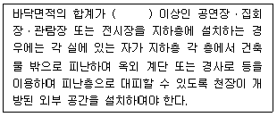
- 1000m2
- 3000m2
- 5000m2
- 10000m2
(정답률: 50%)
92. 다음 중 6층 이상의 거실면적의 합계가 10000m2인 경우 설치하여야 하는 승용승강기의 최소 대수가 가장 많은 것은? (단, 15인승 승용승강기의 경우)
- 의료시설
- 숙박시설
- 노유자시설
- 교육연구시설
(정답률: 65%)
93. 국토교통부장관 또는 시ㆍ도지사는 도시나 지역의 일부가 특별건축구역으로 특례 적용이 필요하다고 인정하는 경우에는 특별건축구역을 지정할 수 있는데, 다음 중 국토교통부장관이 지정하는 경우에 속하는 것은? (단, 관계법령에 따른 국가정책사업의 경우는 고려하지 않는다.)
- 국가가 국제행사 등을 개최하는 도시 또는 지역의 사업구역
- 지방자치단체가 국제행사 등을 개최하는 도시 또는 지역의 사업구역
- 관계법령에 따른 건축문화 진흥사업으로서 건축물 또는 공간환경을 조성하기 위하여 대통령령으로 정하는 사업구역
- 관계법령에 따른 도시개발ㆍ도시재정비 사업으로서 건축물 또는 공간환경을 조성하기 위하여 대통령령으로 정하는 사업구역
(정답률: 39%)
94. 건축물의 용도 분류상 자동차 관련 시설에 속하지 않는 것은?
- 주유소
- 매매장
- 세차장
- 정비학원
(정답률: 50%)
95. 다음과 같은 대지의 대지면적은?
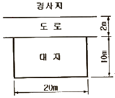
- 160m2
- 180m2
- 200m2
- 210m2
(정답률: 54%)
96. 다음 중 방화구조에 해당하지 않는 것은?
- 철망모르타르로서 그 바름두께가 1.5cm인 것
- 시멘트모르타르 위에 타일을 붙인 것으로서 그 두께의 합계가 2.5cm인 것
- 석고판 위에 회반죽을 바른 것으로서 그 두께의 합계가 2.5cm인 것
- 석고판 위에 시멘트모르타르를 바른 것으로서 그 두께의 합계가 2.5cm인 것
(정답률: 39%)
97. 공동주택의 거실 반자의 높이는 최소 얼마 이상으로 하여야 하는가?
- 2.0m
- 2.1m
- 2.7m
- 3.0m
(정답률: 57%)
98. 건축물을 특별시나 광역시에 건축하여는 경우 특별시장이나 광역시장의 허가를 받아야 하는 대상 건축물의 규모 기준은?
- 층수가 21층 이상이거나 연면적의 합계가 100000m2 이상인 건축물
- 층수가 21층 이상이거나 연면적의 합계가 300000m2 이상인 건축물
- 층수가 41층 이상이거나 연면적의 합계가 100000m2 이상인 건축물
- 층수가 41층 이상이거나 연면적의 합계가 300000m2 이상인 건축물
(정답률: 55%)
99. 연면적 200m2를 초과하는 건축물에 설치하는 계단의 설치기준에 관한 내용이 틀린 것은?
- 높이가 1m를 넘는 계단 및 계단참의 양옆에는 난간을 설치할 것
- 너비가 4m를 넘는 계단에는 계단의 중간에 너비 4m 이내마다 난간을 설치할 것
- 높이가 3m를 넘는 계단에는 높이 3m 이내마다 유효너비 120cm 이상의 계단참을 설치할 것
- 계단의 유효 높이(계단의 바닥 마감면부터 상부 구조체의 하부 마감면까지의 연직방향의 높이)는 2.1m 이상으로 할 것
(정답률: 53%)
100. 그림과 같은 도로 모퉁이에서 건축선의 후퇴 길이 “a"는?
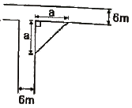
- 2m
- 3m
- 4m
- 5m
(정답률: 51%)